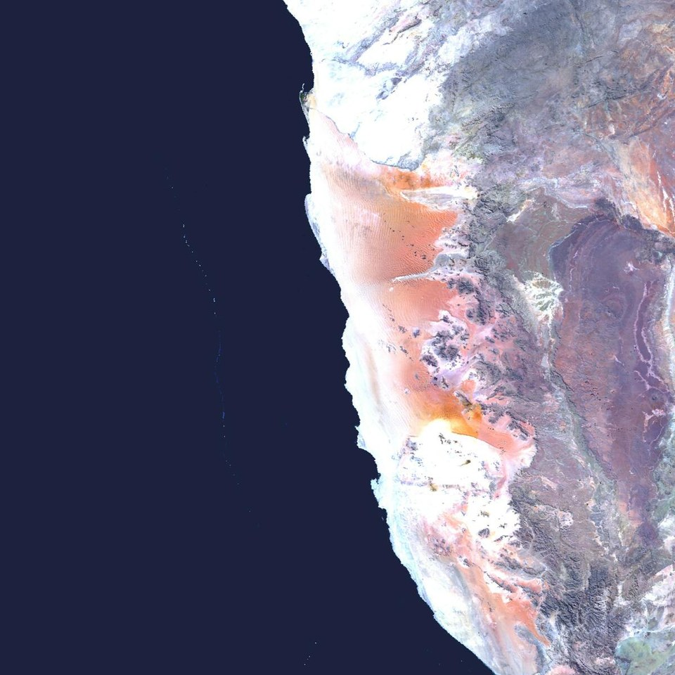

Bài Cơ Bản 01 · Thiết Lập Đề Bài & EDA Ngắn Gọn Phù Hợp Mọi Bài Toán
Cấu Hình @dataclass CFG, Cố Định SEED & Hàm quick_cv_eda 15 Dòng Không Cần Vẽ Hình
01 · Config & Universal EDA
Dùng Chung Folder & CSV
Thay thế hoàn toàn code vẽ lưới ảnh dài dòng bằng 1 hàm
quick_cv_eda duy nhất: Nhận trực tiếp danh sách đường dẫn ảnh (từ thư mục hoặc cột image_id trong CSV) và in ngay 4 thông số quyết định cách chọn CFG: tổng số mẫu, số ảnh hỏng, hệ màu (RGB / L / RGBA), phân vị kích thước và độ lệch lớp .
Kaggle Competition · Dữ Liệu Bảng CSV
Cassava Leaf Disease Classification
Identify the type of disease present on a Cassava Leaf image

Kiểm tra nhanh 21.397 ảnh và tỷ lệ lệch giữa 5 lớp bệnh bằng đúng 1 dòng gọi quick_cv_eda.
Mở cuộc thi trên Kaggle ↗
Kaggle Benchmark · Dữ Liệu Thư Mục Lớp
EuroSAT Dataset
Land Use and Land Cover Classification with Sentinel-2

Tập ảnh 10 lớp kích thước 64×64 gọn nhẹ để thử nghiệm mạng SimpleCNN cơ bản tự viết từ đầu.
Mở cuộc thi trên Kaggle ↗
- Đọc kết quả EDA để chỉnh
CFGtrong 10 giây: Nếuclass_min_maxchênh lệch lớn (VD: so với ), bật trọng số nghịch đảo tần suất lớp; nếumodeslẫn ảnh xámLhoặcRGBA, bắt buộc ép.convert("RGB")khi đọc ảnh.
Bước 1 · Khuôn Mẫu Cơ Bản Nhất
Khung
@dataclass CFG, seed_everything & hàm quick_cv_eda dùng cho mọi bài ảnh
baselines/cv_eda_and_config.py — CFG Chuẩn & EDA Ngắn Gọn Không Cần Vẽ Biểu Đồ
Khi nào cần dùng? Khi bạn muốn kiểm tra nhanh luồng dữ liệu hoặc khi đề bài yêu cầu tự xây dựng mạng CNN cơ sở không dùng trọng số tiền huấn luyện:
baselines/basic_cnn_scratch.py — Mạng SimpleCNN Tối Giản 22 Dòng
- Chạy thử
quick_cv_edatrên một tập ảnh bất kỳ để lấy ngay thông số kích thước, kênh màu và tỷ lệ lệch nhãn trong 1 giây.